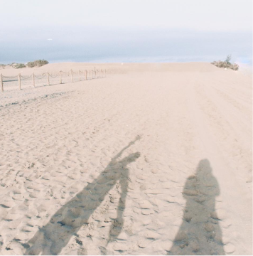

CANARIAS
In September, I visited the Canarias to rest and breathe, carrying my analog camera. The island's tranquility enveloped me...
VIEW PROJECTIn September, I visited the Canarias to rest and breathe, carrying my analog camera. The island's tranquility enveloped me...
VIEW PROJECTIn Sweden, my Love Theory project used analog photography to capture casual moments of couples and families...
VIEW PROJECTEveryday moments reveal extraordinary details; this inspires me each time I take my analog camera out on the street...
VIEW PROJECTBarcelona project captured the city's vibrant art, creators, musicians, and moments, all through the lent...
VIEW PROJECTIn Malaga, I embraced my analog camera, uncovering an inspiring world that fueled my passion to explore and create further projects...
VIEW PROJECTMy personal project became a portal of self-discovery, weaving me into art's embrace and revealing an uncharted facet within...
VIEW PROJECT